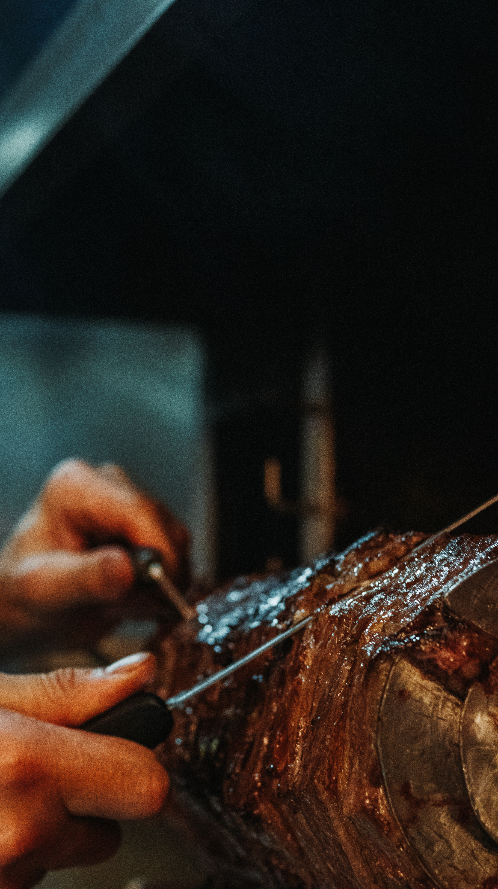
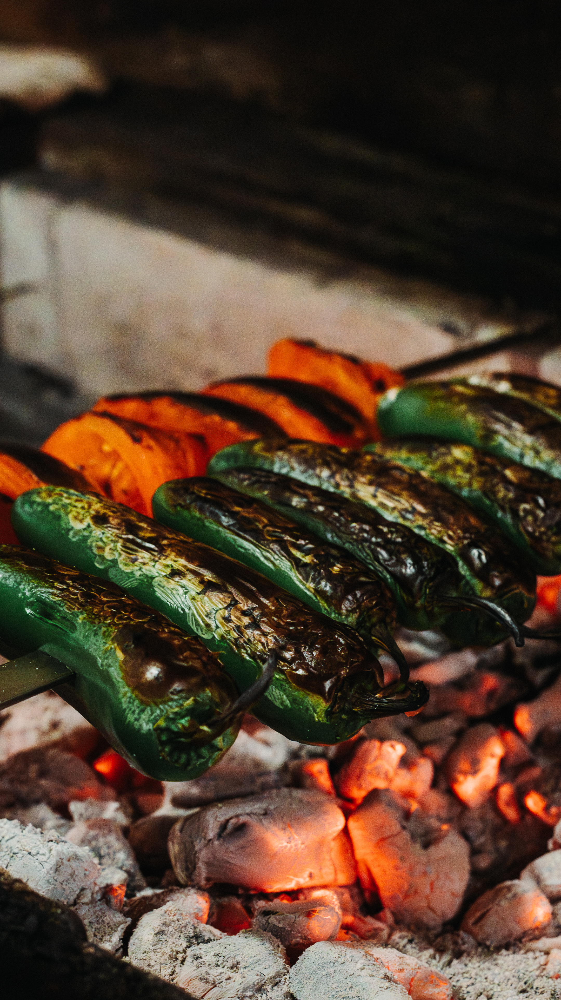
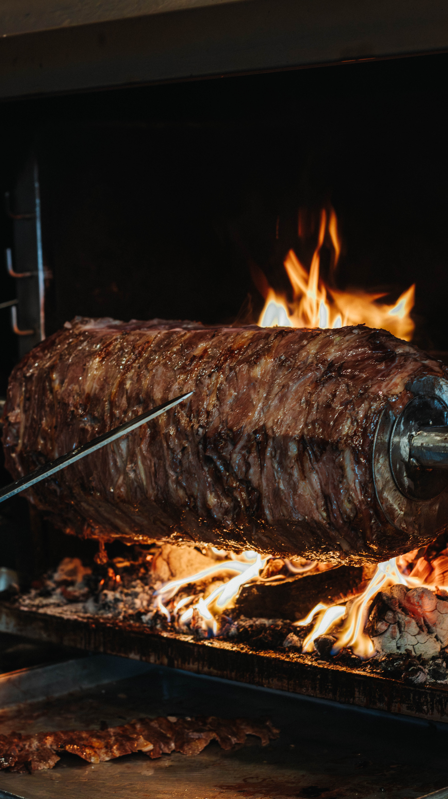
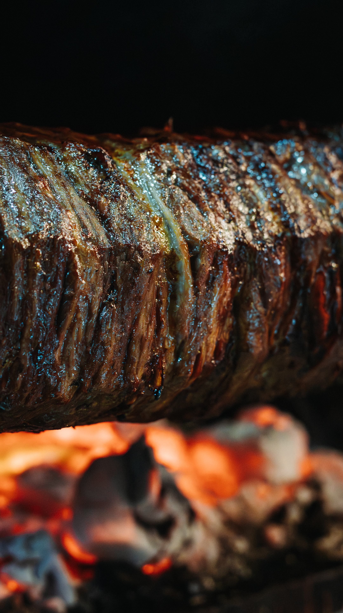
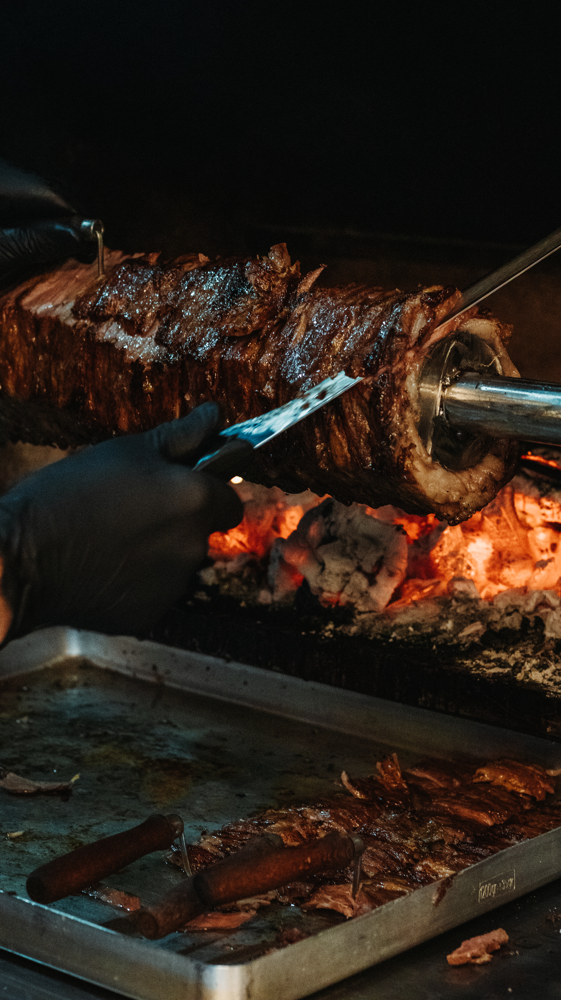
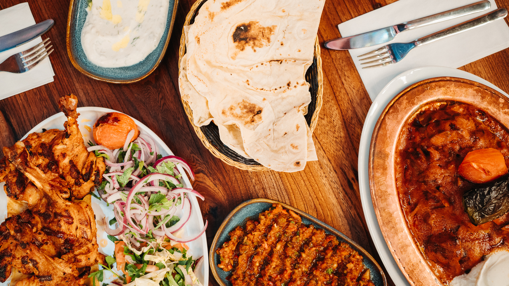
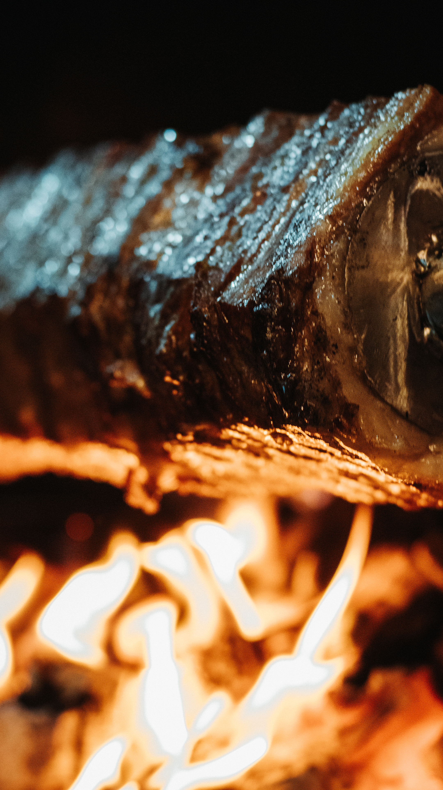
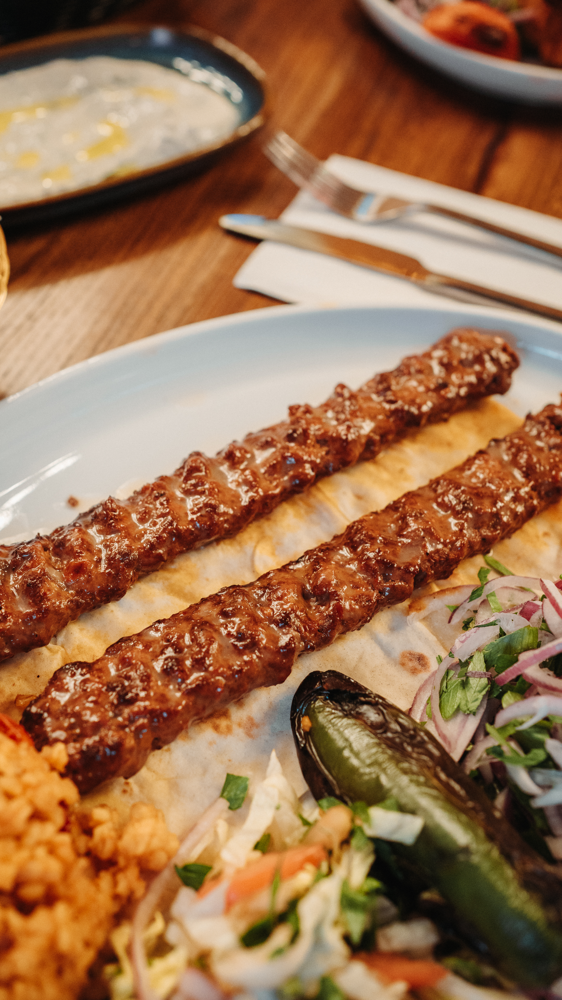

Reel 010 · Toronto · MMXXVI
FrameFlow Studio Presents
A short film about a kebab house, told in fire and bread.
Act I
In which the cağ begins to turn, and the room learns to wait.


Scene 02 · The Rotation
Where the doner is a tower, the cağ is a story — bound horizontally to the spit, rolled slowly above oak embers, fed by a chef who watches the fire as one watches a long sentence resolve itself.
We waited. Four shoots, in light that asked to be waited on.
Act II
In which a long blade meets a slow roast, and an epic becomes a portion.

Scene 05 · The Hand
Between the chef and the spit, a black glove and a handle worn pale by ten thousand of these movements. We made six frames of the gesture, then chose three.

Act III
In which adana, ezme, and lavash become a single sentence.

B-Roll
Six trailers cut from the four shoots, for social and for paid placements.

▶
▶Display · Bodoni Moda
Aa Bb 0123 — Destan.
Body · Inter Light
A short film about a kebab house, told in fire and bread.
UI · JetBrains Mono
SCN 06 · F4.0 · 1/160 · ISO 400
Directed, photographed, and run by FrameFlow · Toronto